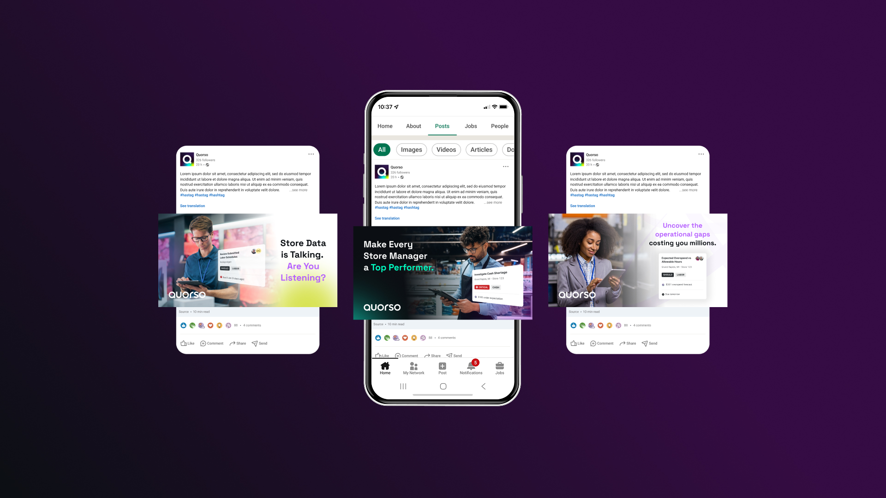
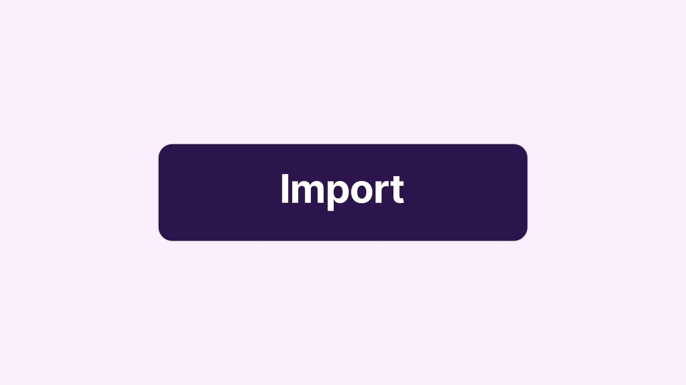

Quorso
Leading the marketing design department. I act as creative designer/art director across Quorso's digital, social, print and motion output, from concept through to delivery.

Quorso is a leading retail performance platform that helps store teams and head offices turn data into clear, actionable priorities.
On the marketing side, I am effectively the primary designer holding the design output together, from creative direction down to final delivery.
The remit spans digital, social, print and motion, and increasingly the processes and tooling that keep that output consistent and fast.
One designer, multiple hats.
I'm the only designer on the marketing team, which makes my work genuinely diverse. One in-house designer, spanning print, digital, social and motion across a growing range of stakeholders.
A big part of the job is navigating and managing incoming design requests while acting as the guardian of the brand, keeping everything consistent no matter how many directions it's pulled in, under tight deadlines and across departments.
We've started utilizing AI tools, but I'm actively leading how we use them: pushing what's possible while making sure the brand doesn't become just another fish in a big sea of generative AI. The aim is always to stay distinctive and stand out.

Art direction, delivered hands-on.
I own the marketing design function end to end: setting direction, producing the work, and shaping the processes that keep it all moving.
- 01Creative direction, concept to executionI direct the work from concept through to delivery, independently producing event assets and key materials that previously took a team of six across agencies.
- 02The pitch decks I often delivered client presentations under high pressure in under just a few days for a high-value pitch, staying calm to the deadline and producing high-quality work quickly when it mattered most.
- 03Leading the marketing design functionI hold the marketing design output together, coordinating across stakeholders and departments, managing evolving requirements around new AI tools, and influencing design decisions at both team and management level.
- 04Animation and motion workI proactively developed motion design skills and now produce animations and motion assets for releases and social to elevate the brand.
